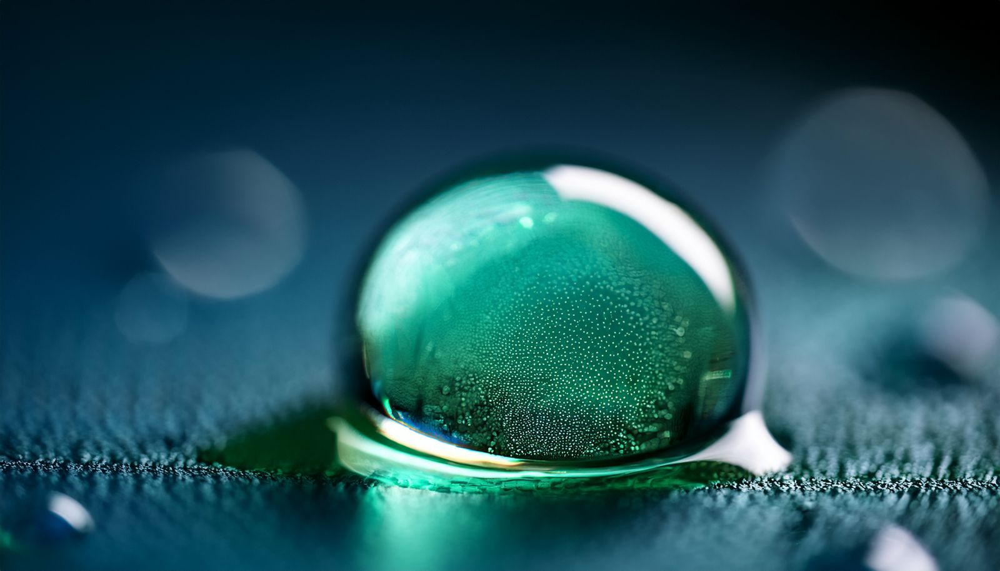
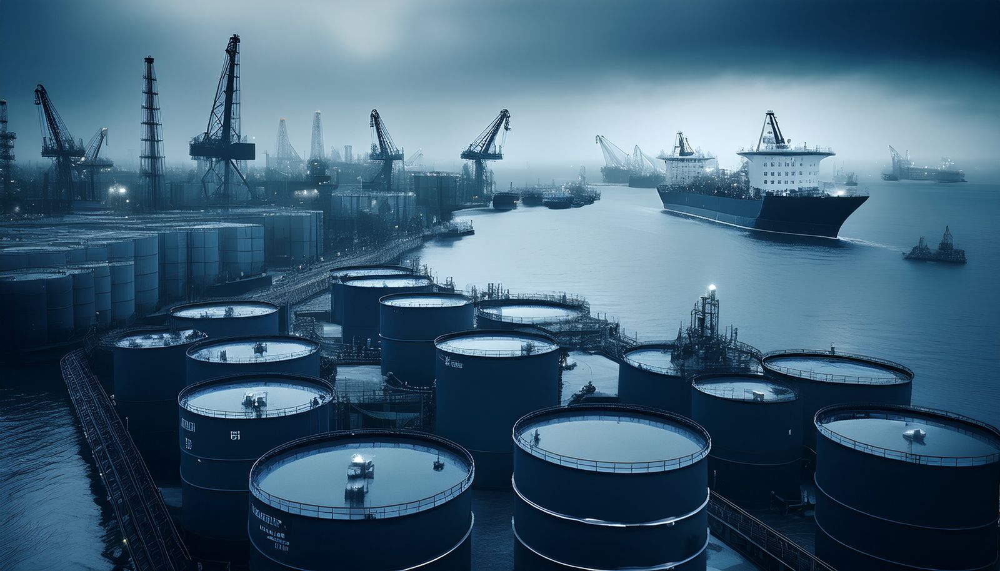
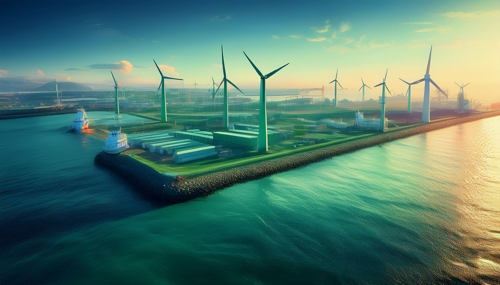
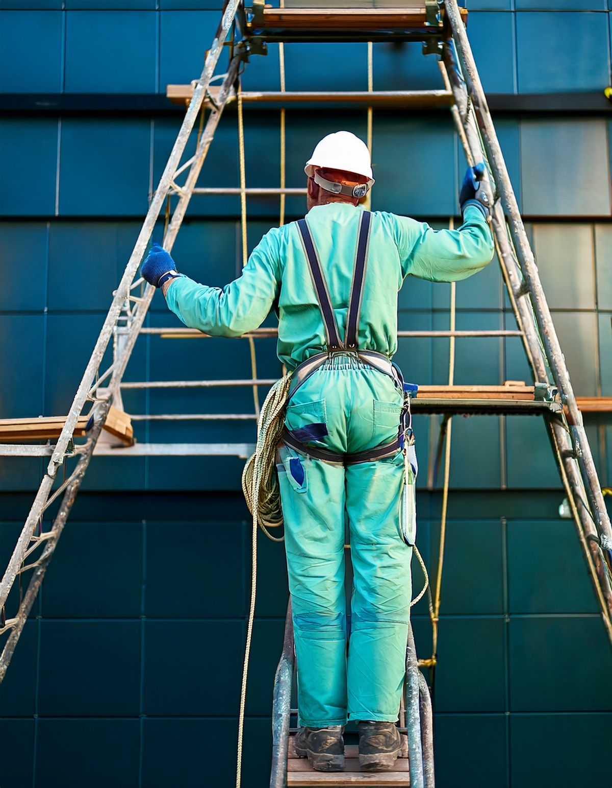
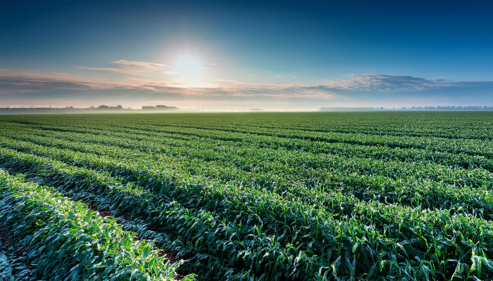
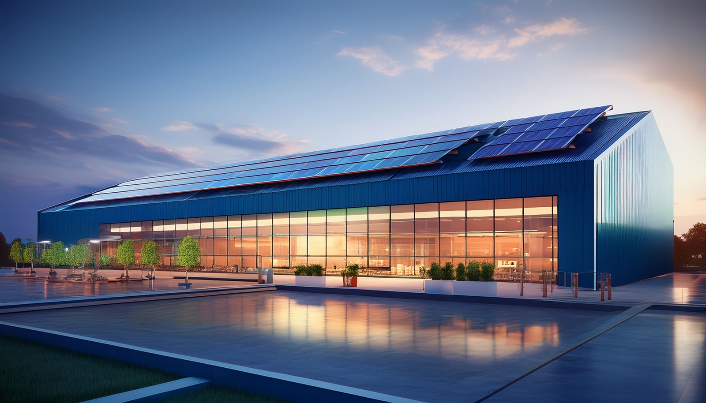

In the field
Protected by Baril
From national infrastructure to monumental restoration — objects our coatings keep alive, longer.


Drag to explore · All cases →
Baril Group — 's-Hertogenbosch, NL · Production EU / US / PL
One group. Three brands. A single mission: protect more, with less — renewing the coatings and paint industry from the chemistry up.
Mission
We believe nobody should have to choose between sustainable, price and quality. So we are converting every product line, phase by phase, to renewable raw materials — and proving along the way that thinner, cleaner coatings protect longer.
Chapter 01 · Circular raw materials
Every liter of paint is chemistry: binder, solvent, pigment, additives. For a century that chemistry was crude-oil based — the binder, and more often than not the solvent too. We are converting both to renewable and circular raw materials: from less than 10% in 2022 to 55% today, on our way to 100% in 2030.

Chapter 02 · A what-if scenario
The world produces ≈ 50+ million tonnes of paints and coatings every year — still overwhelmingly fossil chemistry. This is what changes direction when that volume moves to renewable raw materials and thin-layer application, the way we are doing it.
Illustrative scenario based on Baril's product transition. Global volume: industry estimates 2022–2024, see sources.


Chapter 03 · People & safety
In the Netherlands, chronic solvent exposure had its own name: schildersziekte — painter's disease (CSE/OPS). Irreversible damage to the nervous system, recognized as an occupational disease. Then the industry reformulated — waterborne, low-VOC — and the numbers collapsed. Proof that chemistry chosen in the factory protects people on the scaffold.
Sources: ops-loket.nl · beroepsziekten.nl · Directive 2004/42/EC (EUR-Lex)

Chapter 04 · Local chains
Crude-derived chemistry crosses the planet before it reaches a paint can. Plant-based and residual-stream feedstocks shorten the chain: grown, processed and applied in the same region. We produce close to our markets — 's-Hertogenbosch, the United States, Poland — on our own solar and wind power, with a fully electric fleet and inclusive hiring as policy, not project.


Portfolio
Each brand carries the same chemistry-first philosophy to a different audience — from offshore steel to your living-room wall.
For industry
High-performance industrial coatings and construction paints. Thin-layer protection for steel and infrastructure, OEM and metal industry, marine & offshore — engineered to extend material life with less coating.
barilcoatings.com →For the trade
A complete biobased paint system for the professional painter. Plant-based chemistry with EU Ecolabel and Cradle to Cradle certification — the greenest paint, mixable in every colour.
copperant.com →For the home
Plant-based wall and lacquer paint for everyone. Colour collections designed by experts, mixed in every colour of the rainbow — online and on the shelf at Karwei.
fairf.eu →In the field
From national infrastructure to monumental restoration — objects our coatings keep alive, longer.
Drag to explore · All cases →
Technology
Chemistry
Plant-based raw materials replace fossil chemistry where it counts — binding CO₂ instead of emitting it, without compromising performance.
Application
More protection from less material. Lower film thickness means longer-lasting objects, fewer repaints and a smaller footprint per protected m².
Production
Producing close to our markets in the Netherlands, the United States and Poland — with emission reduction designed into the process.
Datasheet
Sources & substantiation